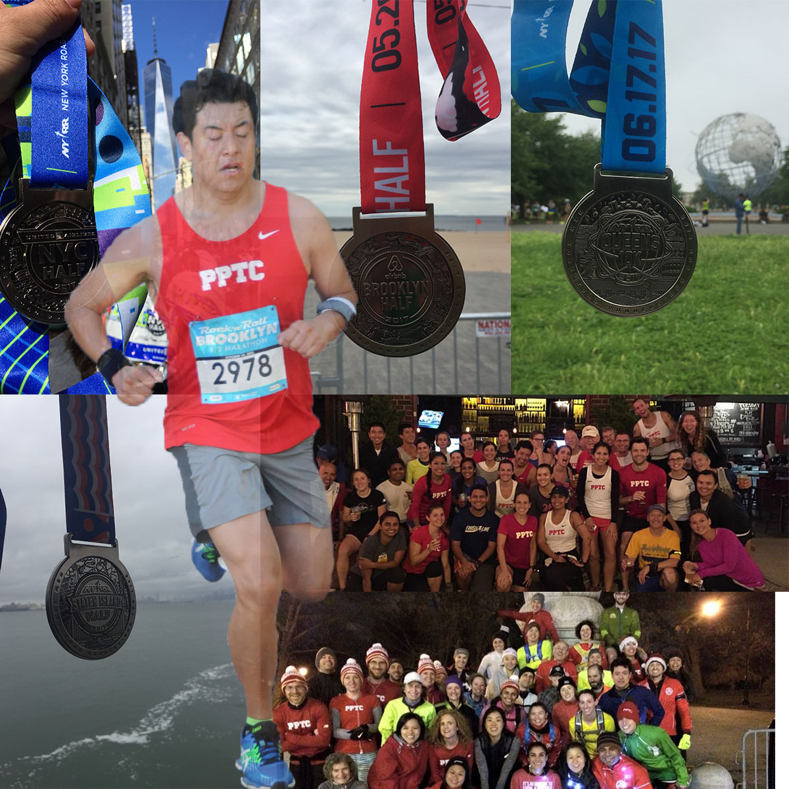

Running Life in NYC
Being part of PPTC showed me that I can achieve all my goals if I believe in myself, and never give up in what makes me happy. Even though it means doing a big effort. Life is like running races, it is about challenging yourself every moment, trying to be the best for the next race competition. Next goal, I will try to look for associates degree at CUNY.
